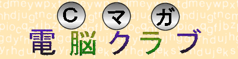

- Ｃマガ電脳クラブとは
-
Ｃマガ電脳クラブとは、ソフトバンクから発行されている『CMAGAZINE』という雑誌
(毎月18日発売)に連載されているコーナーです。ここでは毎月コンピュータを使わないと解けない
ようなパズルを出題し、この解答をはじきだすプログラムを作り応募するというものです。
- プログラミング言語
-
この雑誌がC言語を主体としているため、解答プログラムはC言語（C++は不可）となっています。
開発環境はなんでもいいですが、最近の傾向では Windows2000 ＋ Visual C++/gcc が多い
ようです。
ちなみに、私は「Linux + gcc」と「Windows2000 + VC++ .NET」の組み合わせです。
その昔は「MS-DOS + Turbo C++4.0J」でした。
- 応募方法
-
作成したソースプログラムに解説、感想を付けてテキストファイルで送ります。
送付はe-mail、郵送どちらでも可能ですがインターネット全盛期の時代なのでメールで
送付するのがお手軽でしょうね。
その昔、個人レベルでネットが使えなかった頃は 3.5 インチフロッピーディスク(MF-2HD)
にプログラムを入れて郵送してました。フロッピー自体それほど重くはないので、確か
80円切手で送れたと記憶しています。
- 正解だったら
-
応募した解答が正解であれば作者の名前がすみっこの方に載ります。
運がよければ、コメントが掲載されることもあります。また、解答プログラム
をパズル出題者が気に入れば、解説が紙面掲載、ソースが付録に収録されます。
ちなみに、コメントおよびソース収録であれば粗品がもらえることがありましたが、
最近はなくなったようです（粗品については紙面のどこにも書かれていない）。
- スペシャル・サンクス
-
高橋謙一郎さんに過去のリストを頂きました。
多河さんに欠けていたタイトルを教えて頂きました。
感謝。
- 挑戦記録について
-
挑戦記録のところでは応募して正解だったソースコードを公開しています。
正解のプログラムといっても実行時間がやたらと長かったり汎用性に欠けていたりと、
お手本になるようなところはありません(-_-;) 勉強にするなら紙面に採用された
方々のプログラムを見るのが一番です。
ソースコードは単体でもコンパイルできますが作業効率がよくなるように makefile を
用意してプログラムを作っています。参考までに紹介します。
- このページについて
-
本ページはソフトバンク・パブリッシング株式会社、およびＣマガ電脳クラブのコーナー
とは一切関係がありません。非公式に私個人が作成しているもので、そのため間違いが含ま
れている可能性があります。ご了承ください。
戻る